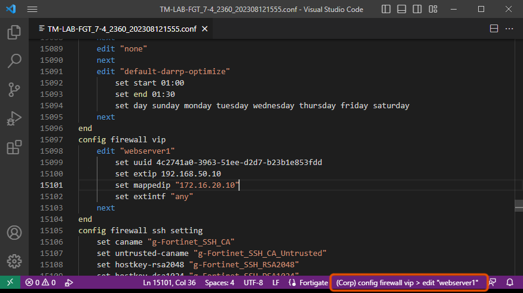
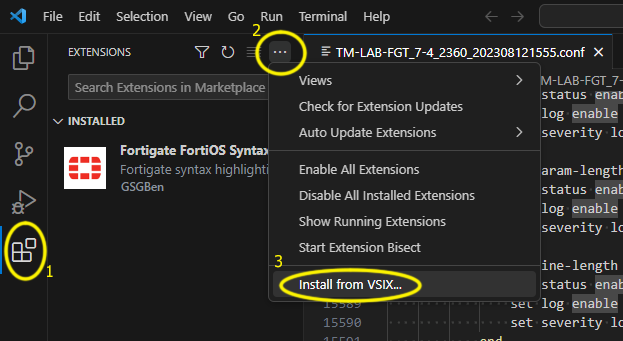

A vscode extension which displays the current VDOM and place in configuration file.
1) Install the Fortigate FortiOS Syntax extension (this will create a FortiGate language type).
2) Download the foritos-breadcrumb extension here.
3) Install the extension using the "Install from VISX..." option in the extension pane of vscode.
4) This extension will activate when the language type is "FortiGate", the extension from step one will automatically do this for .conf, .fgt & .fortigate files